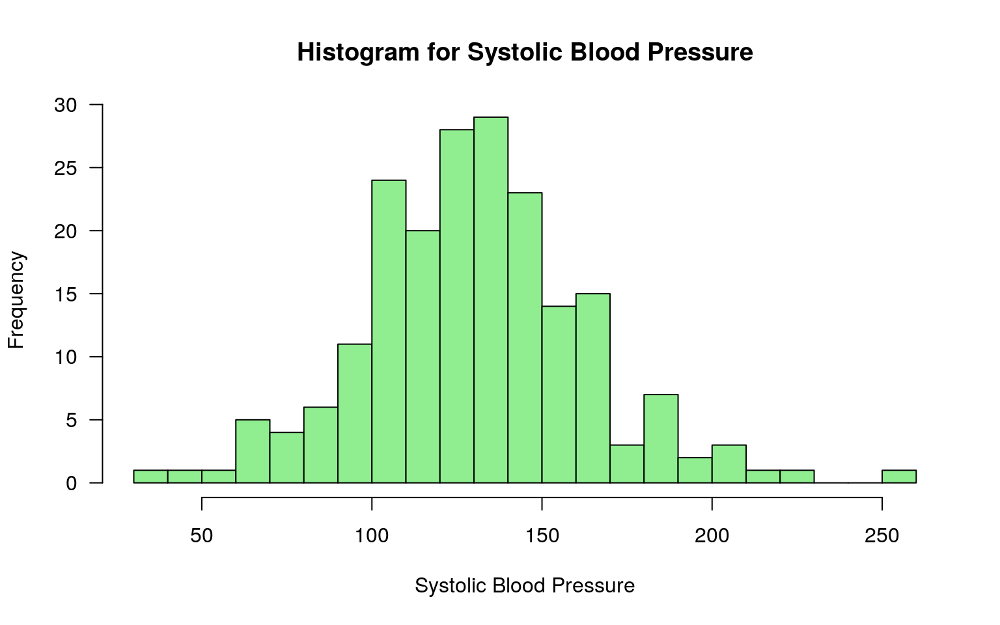
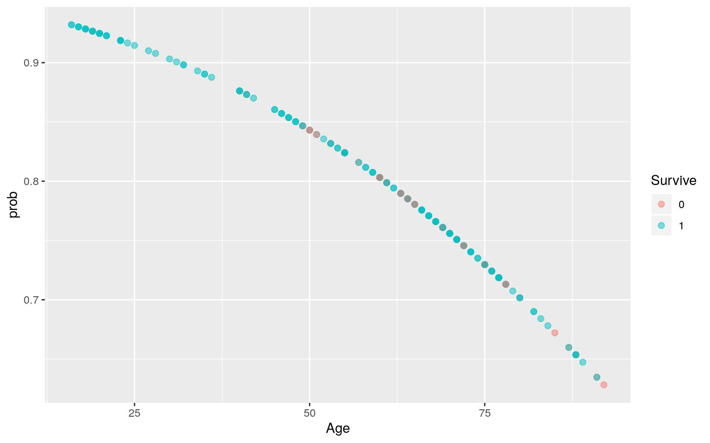
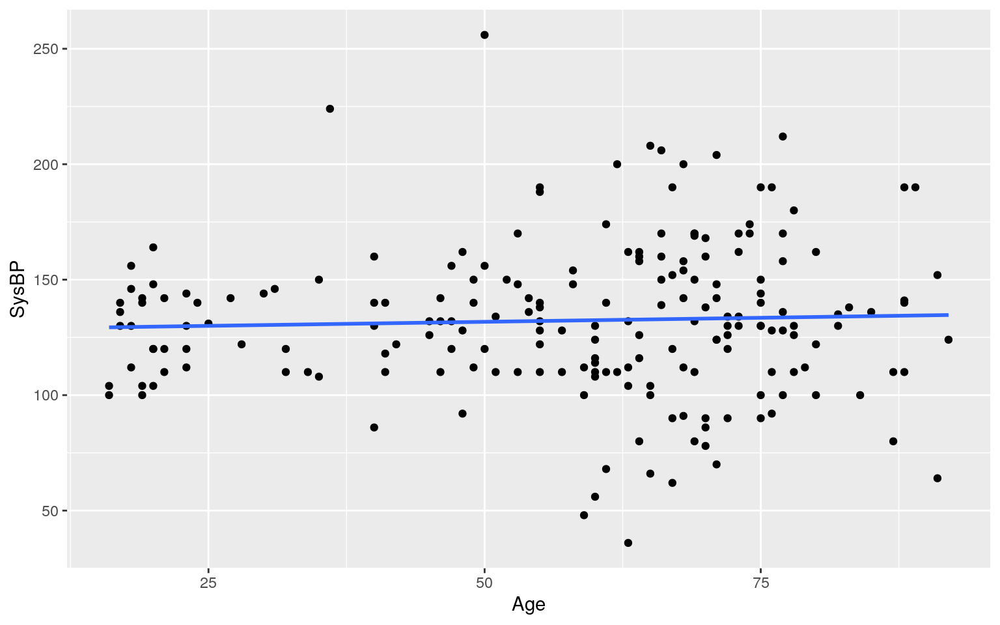
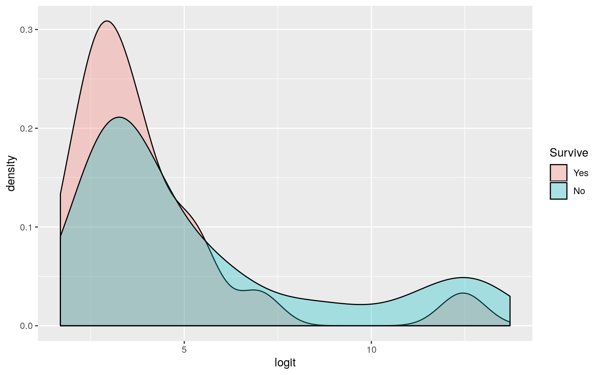
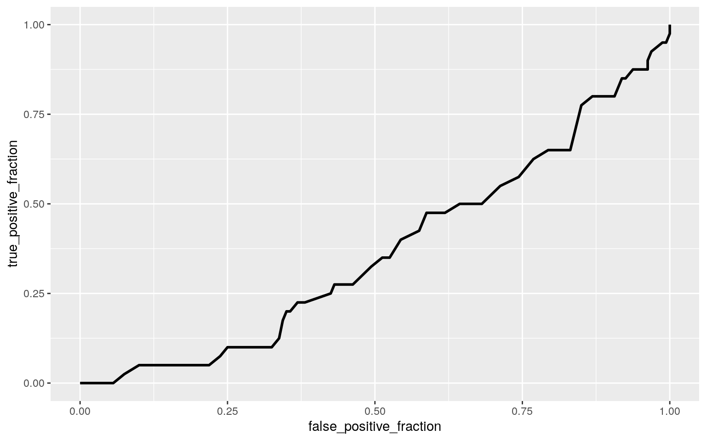

A knitted R Markdown document (as a PDF) and the raw R Markdown file (as .Rmd) should both be submitted to Canvas by 11:59pm on 11/24/2019. These two documents will be graded jointly, so they must be consistent (i.e., don’t change the R Markdown file without also updating the knitted document). Knit an html copy too, for later! In the .Rmd file for Project 2, you can copy the first code-chunk into your project .Rmd file to get better formatting. Notice that you can adjust the opts_chunk$set(…) above to set certain parameters if necessary to make the knitting cleaner (you can globally set the size of all plots, etc). I have gone ahead and set a few for you (such as disabling warnings and package-loading messges when knitting)!
Like before, I envision your written text forming something of a narrative structure around your code/output. All results presented must have corresponding code. Any answers/results/plots etc. given without the corresponding R code that generated the result will not be graded. Furthermore, all code contained in your final project document should work properly. Please do not include any extraneous code or code which produces error messages. (Code which produces warnings is acceptable, as long as you understand what the warnings mean).
Find one dataset with at least 5 variables that wish to use to build model. At least one should be categorical (with 2-5 groups) and at least two should be numeric. Ideally, one of your variables will be binary (if not, you will need to create one by discretizing a numeric, which is workable but less than ideal). You will need a minimum of 40 observations (at least 10 observations for every explanatory variable you have, ideally 20+ observations/variable).
It is perfectly fine to use either dataset (or the merged dataset, or a subset of your variables) from Project 1. However, you could also diversify your portfolio a bit by choosing a different dataset to work with (particularly if the variables did not reveal interesting associations in Project 1). The only requirement/restriction is that you may not use data from any examples we have done in class or lab. It would be a good idea to pick more cohesive data this time around (i.e., variables that you actually thing might have a relationship you would want to test). Think more along the lines of your Biostats project.
Again, you can use data from anywhere you want (see bottom for resources)! If you want a quick way to see whether a built-in (R) dataset has binary and/or character (i.e., categorical) variables, check out this list: https://vincentarelbundock.github.io/Rdatasets/datasets.html.
ICU<-read_csv("ICU.csv")
view(ICU)This Intensive Care Unit Patients dataset includes data from a sample of 200 pateints at an ICU. There are 9 varibles presents : patient ID code, patient survial, age, age group, sex, infection suspected, systolic blood pressure, heart rate, and status of admission.
#MANOVA
manova<-manova(cbind(Age,SysBP,Pulse)~Survive, data=ICU)
summary(manova)## Df Pillai approx F num Df den Df Pr(>F)
## Survive 1 0.081387 5.7884 3 196 0.0008221 ***
## Residuals 198
## ---
## Signif. codes: 0 '***' 0.001 '**' 0.01 '*' 0.05 '.' 0.1
' ' 1#univariate ANOVA
library(mvtnorm)
ICU%>%group_by(Survive)%>%summarize(mean(Age),mean(SysBP),mean(Pulse))## # A tibble: 2 x 4
## Survive `mean(Age)` `mean(SysBP)` `mean(Pulse)`
## <dbl> <dbl> <dbl> <dbl>
## 1 0 65.1 119. 101.
## 2 1 55.6 136. 98.5ICU$Survive <-factor(ICU$Survive)
summary.aov(manova)## Response Age :
## Df Sum Sq Mean Sq F value Pr(>F)
## Survive 1 2873 2872.82 7.3717 0.007211 **
## Residuals 198 77163 389.71
## ---
## Signif. codes: 0 '***' 0.001 '**' 0.01 '*' 0.05 '.' 0.1
' ' 1
##
## Response SysBP :
## Df Sum Sq Mean Sq F value Pr(>F)
## Survive 1 9052 9051.9 8.657 0.003647 **
## Residuals 198 207030 1045.6
## ---
## Signif. codes: 0 '***' 0.001 '**' 0.01 '*' 0.05 '.' 0.1
' ' 1
##
## Response Pulse :
## Df Sum Sq Mean Sq F value Pr(>F)
## Survive 1 144 144.50 0.1999 0.6553
## Residuals 198 143101 722.73#post hoc
pairwise.t.test(ICU$Age,ICU$Survive,p.adj="none")##
## Pairwise comparisons using t tests with pooled SD
##
## data: ICU$Age and ICU$Survive
##
## 0
## 1 0.0072
##
## P value adjustment method: nonepairwise.t.test(ICU$SysBP,ICU$Survive,p.adj="none")##
## Pairwise comparisons using t tests with pooled SD
##
## data: ICU$SysBP and ICU$Survive
##
## 0
## 1 0.0036
##
## P value adjustment method: none#type 1 error
#number of tests = 1 MANOVA, 3 ANOVA, 2 t tests
type1error=1-(1-0.05)^6
type1error## [1] 0.2649081#Boneforroni
Boneforroni=(0.05)/6
Boneforroni## [1] 0.008333333#adjusted
pairwise.t.test(ICU$Age,ICU$Survive,p.adj="bonf")##
## Pairwise comparisons using t tests with pooled SD
##
## data: ICU$Age and ICU$Survive
##
## 0
## 1 0.0072
##
## P value adjustment method: bonferronipairwise.t.test(ICU$SysBP,ICU$Survive,p.adj="bonf")##
## Pairwise comparisons using t tests with pooled SD
##
## data: ICU$SysBP and ICU$Survive
##
## 0
## 1 0.0036
##
## P value adjustment method: bonferroniA MANOVA was conducted to determine the effect of age, systolic blood pressure, and heart rate on survial. The p-value of 0.0008221 is lower than the alpha value of 0.05. We reject the null hypothesis and conclude that at least one of these variables, the means are different. Since this is significant, I continued with running a univariate ANOVA to see which variables are significant and post-hoc-t-test to see which ones differed.
Based on the ANOVA, we see that the means of at least one reponse varibale differs. The p-value is 0.0072 for test with age and 0.0036 for the test with systolic blood pressure. These are both less than the alpha value of 0.05 so we reject the null hypothesis and continue with running 2 post-hoc-t-tests. For blood pressure, the p-value of 0.6553 is greater than 0.05 so we fail to reject the null hypothesis. We can conclude that for blood pressurem, the means of each group are about equal.
There were 6 hypothesis tests ran (1 MANOVA, 3 ANOVA, 2 post-hoc-t-tests). The calculated overall type 1 error rate was 0.2649081. The boneferroni adjusted significance level was calculated by 0.05/6 to be 0.008333333.
For tests of ANOVA, we assume random sample and independent observations. This are likely to be met because they are a random sample of 200 patients from a larger study. There are also many assumptions for running MANOVA/ANOVA test. Both assume dependent variable have multivariate normality,homogeneity of within-group covariance matricies, and no extreme outliers.
#Two Sample t-test
ICU%>%group_by(Survive)%>%summarize(`mean BP`=mean(SysBP),sd=sd(SysBP),n=n())## # A tibble: 2 x 4
## Survive `mean BP` sd n
## <fct> <dbl> <dbl> <int>
## 1 0 119. 41.1 40
## 2 1 136. 29.8 160t.test(data=ICU, SysBP~Survive, var.eq=T)##
## Two Sample t-test
##
## data: SysBP by Survive
## t = -2.9423, df = 198, p-value = 0.003647
## alternative hypothesis: true difference in means is not
equal to 0
## 95 percent confidence interval:
## -28.091252 -5.546248
## sample estimates:
## mean in group 0 mean in group 1
## 118.8250 135.6438#plot
hist(ICU$SysBP, main="Histogram for Systolic Blood Pressure",
xlab="Systolic Blood Pressure",
col="light green",
xlim=c(30,260),
las=1,
breaks=20) The null hypothesis for the 2 sample t-test states that the mean systolic blood pressure between the 2 groups, survived and not survived, are equal. The alternative hypothesis for the 2 sample t-test states that the mean systolic blood pressure between the 2 groups are not equal. I ran a 2 sample t-test and found that the p-value is 0.003647 which is lower than the alpha p-value of 0.05. We reject the null hypothesis and conclude that the mean systolic blood pressure between those who survived and those who did not survive were not equal.
3. (35 pts) Build a linear regression model predicting one of your response variables from at least 2 other variables, including their interaction. Mean-center any numeric variables involved in the interaction.
ggplot(). If your interaction is numeric by numeric, refer to code near the end of WS15 to make the plot. If you have 3 or more predictors, just chose two to plot for convenience. (7)coeftest(..., vcov=vcovHC(...)). Discuss significance of results, including any changes from before/after robust SEs if applicable. (7)library(lmtest)
#Interpret the coefficient estimates
fit1<-lm(SysBP~Age*Survive,data = ICU)
summary(fit1)##
## Call:
## lm(formula = SysBP ~ Age * Survive, data = ICU)
##
## Residuals:
## Min 1Q Median 3Q Max
## -88.445 -22.074 -1.785 18.327 129.937
##
## Coefficients:
## Estimate Std. Error t value Pr(>|t|)
## (Intercept) 149.9895 20.6752 7.255 9.15e-12 ***
## Age -0.4785 0.3078 -1.555 0.1216
## Survive1 -27.6594 21.9470 -1.260 0.2091
## Age:Survive1 0.7178 0.3319 2.162 0.0318 *
## ---
## Signif. codes: 0 '***' 0.001 '**' 0.01 '*' 0.05 '.' 0.1
' ' 1
##
## Residual standard error: 32 on 196 degrees of freedom
## Multiple R-squared: 0.07092, Adjusted R-squared: 0.0567
## F-statistic: 4.987 on 3 and 196 DF, p-value: 0.002347#Regression plot
ICU2<-ICU%>%mutate(y=ifelse(Survive == "Yes","1","0"))
fit5<-glm(Survive~Age, family = "binomial", data=ICU2)
coeftest(fit5) ##
## z test of coefficients:
##
## Estimate Std. Error z value Pr(>|z|)
## (Intercept) 3.058513 0.696081 4.3939 1.113e-05 ***
## Age -0.027543 0.010564 -2.6072 0.009129 **
## ---
## Signif. codes: 0 '***' 0.001 '**' 0.01 '*' 0.05 '.' 0.1
' ' 1ICU$prob<-predict(fit5,type="response")
ICU$Survive<-as.factor(ICU$Survive)
ggplot(ICU,aes(Age,prob))+geom_point(aes(color=Survive),alpha=0.5,size=2)
#plot - assumption of normality
library(tidyverse)
library(ggplot2)
ICU$Survive<-factor(ICU$Survive,labels=c("Yes", "No"))
ICU$Sex<-factor(ICU$Sex,labels=c("F","M"))
ICU%>%ggplot(aes(Age,SysBP))+geom_point()+geom_smooth(method='lm',se=F)
#regression using heteroskedasticity robust standard errors
library(sandwich)
coeftest(fit1,vcov=vcovHC(fit1))##
## t test of coefficients:
##
## Estimate Std. Error t value Pr(>|t|)
## (Intercept) 149.98948 21.65535 6.9262 6.048e-11 ***
## Age -0.47853 0.30341 -1.5772 0.11637
## Survive1 -27.65936 22.26917 -1.2420 0.21570
## Age:Survive1 0.71777 0.31911 2.2493 0.02561 *
## ---
## Signif. codes: 0 '***' 0.001 '**' 0.01 '*' 0.05 '.' 0.1
' ' 1#rerun the regression but without interactions
fit<-lm(Age~SysBP,data = ICU)
coef(fit)## (Intercept) SysBP
## 54.1159190 0.0259229cov(ICU$SysBP,ICU$Age)/var(ICU$SysBP)## [1] 0.0259229#SS total
SST<-sum((ICU$Age-mean(ICU$Age))^2)
#SS Regression
SSR<-sum((fit1$fitted.values-mean(ICU$Age))^2)
#SS Error
SSE<-sum(fit1$residuals^2)
#SSR/SST is the proportion of the total variation in y not explained
SSR/SST## [1] 14.14857#R squared
#What proportion of the variation in the outcome does your model explain?
summary(fit1)$r.sq## [1] 0.07092227The intercept 149.9895 is the average systolic blood pressure of the recorded 200 patients in the ICU when there is no interaction with age or survival. The intercept -0.4785 for age indicates that for every 1 year increase in age, there is a decrease of 0.4785 mmHg in systolic blood pressure. The intercept -27.6594 indicates that those patients who did not survive had a systolic pressure 27.6594 lower than those who did survive. The Age:SurviveNo coefficient 0.7178 means that the average systolic blood pressure will increase after including the intereaction between surviving and increasing age.
When running the regression using heteroskedasticity robust standard errors, the p-value 0.475 was calculated. This is greater than the alpha value of 0.05 so we fail to reject the null hypothesis. This p-value is increased from the one calucluated for the regression results earlier which was 0.009129.
Based on the data calculated to find R squared, this model explains about 0.07092227 of the variation in the outcome.
#rerun the regression but without interactions
fit<-lm(Age~SysBP,data = ICU)
coef(fit)## (Intercept) SysBP
## 54.1159190 0.0259229summary(fit)##
## Call:
## lm(formula = Age ~ SysBP, data = ICU)
##
## Residuals:
## Min 1Q Median 3Q Max
## -40.812 -11.016 5.477 14.540 35.225
##
## Coefficients:
## Estimate Std. Error t value Pr(>|t|)
## (Intercept) 54.11592 5.88992 9.188 <2e-16 ***
## SysBP 0.02592 0.04321 0.600 0.549
## ---
## Signif. codes: 0 '***' 0.001 '**' 0.01 '*' 0.05 '.' 0.1
' ' 1
##
## Residual standard error: 20.09 on 198 degrees of freedom
## Multiple R-squared: 0.001814, Adjusted R-squared:
-0.003227
## F-statistic: 0.3599 on 1 and 198 DF, p-value: 0.5493#Rerun same regression model this time compute bootstrapped standard errors
ICU_dat<-ICU[sample(nrow(ICU),replace=TRUE),]
library(lmtest)
samp_distn<-replicate(5000, {
ICU_boot<-ICU[sample(nrow(ICU),replace=TRUE),]
fit3<-lm(Age~SysBP,data=ICU_boot)
coef(fit3)
})
#summary(fit3)
samp_distn%>%t%>%as.data.frame%>%summarise_all(sd)## (Intercept) SysBP
## 1 5.067614 0.03614322The regression model from previous calculated a p-value of 0.549 and SE of 0.04321. The regression model after computing bootstrapped standard errors calculated a p-value of 0.776 and SE of 0.04324.
5. (40 pts) Perform a logistic regression predicting a binary categorical variable (if you don’t have one, make/get one) from at least two explanatory variables (interaction not necessary).
#coefficient estimates
fit9<-lm(SysBP~Survive,data=ICU)
summary(fit9)##
## Call:
## lm(formula = SysBP ~ Survive, data = ICU)
##
## Residuals:
## Min 1Q Median 3Q Max
## -87.644 -23.644 -2.644 20.356 137.175
##
## Coefficients:
## Estimate Std. Error t value Pr(>|t|)
## (Intercept) 118.825 5.113 23.241 < 2e-16 ***
## SurviveNo 16.819 5.716 2.942 0.00365 **
## ---
## Signif. codes: 0 '***' 0.001 '**' 0.01 '*' 0.05 '.' 0.1
' ' 1
##
## Residual standard error: 32.34 on 198 degrees of freedom
## Multiple R-squared: 0.04189, Adjusted R-squared: 0.03705
## F-statistic: 8.657 on 1 and 198 DF, p-value: 0.003647#confusion matrix
table(truth=ICU$Survive, prediction=ICU$Sex)## prediction
## truth F M
## Yes 24 16
## No 100 60#Accuracy
(24+60)/200## [1] 0.42#Sensitivity TPR
16/40## [1] 0.4#Specificity TNR
100/160## [1] 0.625#Precision PPV recall
16/76## [1] 0.2105263#Density of log-odds
library(dplyr)
library(MASS)
library(ggplot2)
library(tidyverse)
library(lmtest)
ICU$odds<-(ICU$prob)/(1-ICU$prob)
ICU$logit<-(ICU$odds)
ggplot(ICU)+geom_density(aes(logit,fill= Survive),alpha=0.3)
#ROC Plot
prob<-predict(fit,type="response")
library(plotROC)
ROC<-ggplot(ICU)+geom_roc(aes(d=Survive,m=prob),n.cuts=0)
ROC
#AUC
calc_auc(ROC)## PANEL group AUC
## 1 1 -1 0.3700781#Class diagnositcs
class_diag<-function(probs,truth){
tab<-table(factor(probs>.5,levels=c("FALSE","TRUE")),truth)
acc=sum(diag(tab))/sum(tab)
sens=tab[2,2]/colSums(tab)[2]
spec=tab[1,1]/colSums(tab)[1]
ppv=tab[2,2]/rowSums(tab)[2]
if(is.numeric(truth)==FALSE & is.logical(truth)==FALSE) truth<-as.numeric(truth)-1
ord<-order(probs, decreasing=TRUE)
probs <- probs[ord]; truth <- truth[ord]
TPR=cumsum(truth)/max(1,sum(truth))
FPR=cumsum(!truth)/max(1,sum(!truth))
dup<-c(probs[-1]>=probs[-length(probs)], FALSE)
TPR<-c(0,TPR[!dup],1); FPR<-c(0,FPR[!dup],1)
n <- length(TPR)
auc<- sum( ((TPR[-1]+TPR[-n])/2) * (FPR[-1]-FPR[-n]) )
data.frame(acc,sens,spec,ppv,auc)}
#10-fold CV
set.seed(1234)
k=10
data1<-ICU[sample(nrow(ICU)),]
folds<-cut(seq(1:nrow(ICU)),breaks=k,labels=F)
diags<-NULL
for(i in 1:k){
train<-data1[folds!=i,]
test<-data1[folds==i,]
truth<-test$Survive
fit<-glm(Survive~Age+SysBP,data=train,family="binomial")
probs<-predict(fit,newdata = test,type="response")
diags<-rbind(diags,class_diag(probs,truth))
}
apply(diags,2,mean)## acc sens spec ppv auc
## 0.8100000 1.0000000 0.0400000 0.8078947 0.6795874The coefficeint estimate for systolic blood pressure is 16.819. The p-value is 0.00365 which is lower than the alpha level of 0.05. There is a significant effect of systolic blood pressure on those grouped by survival. On average, those individuals who did not survive had a systolic blood pressure 16.819 mmHg higher than those who did survive.
The AUC area under curve is calculated to be 0.3700781. This AUC is relatively poor meaning that systolic blood pressure and age are poor predictors of survival.
The 10-fold CV average out of sample accuracy is 0.8227273. The sensitivity is 0.9952153, the specificity is 0.1318182 and the recall PPV percision is 0.8248804. The AUC here is 0.6538223 which is still relatively poor meaning that systolic blood pressure and age are poor predictors of survival. But it is greater than the previous AUC of 0.3700781 which means there is no sign of overfitting.
lambda.1se). Discuss which variables are retained. Perform 10-fold CV using this model: if response in binary, compare model’s out-of-sample accuracy to that of your logistic regression in part 5; if response is numeric, compare the residual standard error (at the bottom of the summary output, aka RMSE): lower is better fit!#LASSO
install.packages("glmnet")
library(glmnet)
y<-as.matrix(ICU$Survive)
x<-model.matrix(fit1)
x## (Intercept) Age Survive1 Age:Survive1
## 1 1 87 0 0
## 2 1 27 1 27
## 3 1 59 1 59
## 4 1 77 1 77
## 5 1 76 0 0
## 6 1 54 1 54
## 7 1 87 1 87
## 8 1 69 1 69
## 9 1 63 1 63
## 10 1 30 1 30
## 11 1 35 1 35
## 12 1 78 0 0
## 13 1 70 1 70
## 14 1 55 1 55
## 15 1 63 0 0
## 16 1 48 1 48
## 17 1 66 1 66
## 18 1 61 1 61
## 19 1 66 1 66
## 20 1 52 1 52
## 21 1 55 1 55
## 22 1 59 1 59
## 23 1 63 1 63
## 24 1 72 1 72
## 25 1 60 1 60
## 26 1 78 1 78
## 27 1 16 1 16
## 28 1 62 1 62
## 29 1 61 1 61
## 30 1 19 0 0
## 31 1 35 1 35
## 32 1 74 1 74
## 33 1 68 1 68
## 34 1 67 0 0
## 35 1 69 1 69
## 36 1 53 0 0
## 37 1 92 0 0
## 38 1 51 1 51
## 39 1 55 1 55
## 40 1 64 1 64
## 41 1 88 1 88
## 42 1 23 1 23
## 43 1 73 1 73
## 44 1 53 1 53
## 45 1 74 1 74
## 46 1 57 0 0
## 47 1 75 0 0
## 48 1 91 0 0
## 49 1 68 1 68
## 50 1 70 0 0
## 51 1 66 1 66
## 52 1 60 1 60
## 53 1 64 1 64
## 54 1 88 0 0
## 55 1 66 1 66
## 56 1 19 1 19
## 57 1 41 0 0
## 58 1 61 0 0
## 59 1 18 1 18
## 60 1 63 1 63
## 61 1 45 1 45
## 62 1 64 1 64
## 63 1 68 1 68
## 64 1 80 0 0
## 65 1 64 1 64
## 66 1 82 1 82
## 67 1 73 1 73
## 68 1 70 1 70
## 69 1 40 0 0
## 70 1 61 1 61
## 71 1 64 1 64
## 72 1 47 1 47
## 73 1 69 1 69
## 74 1 75 0 0
## 75 1 67 1 67
## 76 1 18 1 18
## 77 1 77 1 77
## 78 1 32 1 32
## 79 1 63 0 0
## 80 1 19 1 19
## 81 1 72 1 72
## 82 1 49 1 49
## 83 1 75 0 0
## 84 1 68 1 68
## 85 1 82 1 82
## 86 1 32 1 32
## 87 1 78 1 78
## 88 1 57 1 57
## 89 1 46 1 46
## 90 1 23 1 23
## 91 1 55 1 55
## 92 1 18 1 18
## 93 1 20 0 0
## 94 1 20 1 20
## 95 1 75 1 75
## 96 1 71 0 0
## 97 1 79 1 79
## 98 1 40 1 40
## 99 1 76 1 76
## 100 1 51 0 0
## 101 1 66 1 66
## 102 1 76 1 76
## 103 1 65 0 0
## 104 1 80 1 80
## 105 1 23 1 23
## 106 1 48 1 48
## 107 1 69 0 0
## 108 1 67 1 67
## 109 1 55 0 0
## 110 1 69 1 69
## 111 1 50 0 0
## 112 1 78 0 0
## 113 1 65 1 65
## 114 1 72 1 72
## 115 1 55 1 55
## 116 1 40 1 40
## 117 1 55 1 55
## 118 1 34 1 34
## 119 1 71 0 0
## 120 1 47 1 47
## 121 1 41 1 41
## 122 1 84 1 84
## 123 1 88 1 88
## 124 1 77 1 77
## 125 1 80 1 80
## 126 1 16 1 16
## 127 1 70 1 70
## 128 1 83 1 83
## 129 1 23 1 23
## 130 1 67 1 67
## 131 1 18 1 18
## 132 1 77 1 77
## 133 1 48 1 48
## 134 1 24 1 24
## 135 1 71 1 71
## 136 1 72 1 72
## 137 1 85 0 0
## 138 1 75 0 0
## 139 1 77 1 77
## 140 1 60 1 60
## 141 1 46 1 46
## 142 1 65 1 65
## 143 1 36 1 36
## 144 1 68 1 68
## 145 1 58 1 58
## 146 1 76 1 76
## 147 1 65 0 0
## 148 1 41 1 41
## 149 1 20 1 20
## 150 1 49 0 0
## 151 1 91 1 91
## 152 1 75 1 75
## 153 1 25 1 25
## 154 1 75 0 0
## 155 1 70 1 70
## 156 1 47 1 47
## 157 1 75 1 75
## 158 1 40 1 40
## 159 1 71 1 71
## 160 1 72 0 0
## 161 1 70 1 70
## 162 1 58 1 58
## 163 1 69 0 0
## 164 1 64 0 0
## 165 1 54 1 54
## 166 1 77 1 77
## 167 1 55 1 55
## 168 1 21 1 21
## 169 1 53 1 53
## 170 1 31 1 31
## 171 1 71 1 71
## 172 1 49 1 49
## 173 1 60 1 60
## 174 1 60 0 0
## 175 1 50 1 50
## 176 1 45 1 45
## 177 1 21 1 21
## 178 1 73 1 73
## 179 1 28 1 28
## 180 1 17 1 17
## 181 1 17 1 17
## 182 1 21 1 21
## 183 1 68 1 68
## 184 1 17 1 17
## 185 1 60 1 60
## 186 1 60 0 0
## 187 1 69 1 69
## 188 1 88 1 88
## 189 1 20 1 20
## 190 1 89 1 89
## 191 1 62 1 62
## 192 1 46 1 46
## 193 1 19 1 19
## 194 1 71 1 71
## 195 1 67 1 67
## 196 1 50 0 0
## 197 1 20 1 20
## 198 1 73 1 73
## 199 1 59 1 59
## 200 1 42 1 42
## attr(,"assign")
## [1] 0 1 2 3
## attr(,"contrasts")
## attr(,"contrasts")$Survive
## [1] "contr.treatment"x<-x[,-1]
cv <- cv.glmnet(x, y, family = "binomial")
lasso <- glmnet(x, y, family = "binomial", lambda = cv$lambda.1se)
coef(lasso)## 4 x 1 sparse Matrix of class "dgCMatrix"
## s0
## (Intercept) 6.635573
## Age .
## Survive1 -14.658386
## Age:Survive1 .#10 fold CV
set.seed(1234)
k=10
data1<-ICU[sample(nrow(ICU)),]
folds<-cut(seq(1:nrow(ICU)),breaks=k,labels=F)
diags<-NULL
for(i in 1:k){
train<-data1[folds!=i,]
test<-data1[folds==i,]
truth<-test$Survive
fit<-glm(Survive~Age+SysBP,data=train,family="binomial")
probs<-predict(fit,newdata = test,type="response")
diags<-rbind(diags,class_diag(probs,truth))
}
apply(diags,2,mean)## acc sens spec ppv auc
## 0.8100000 1.0000000 0.0400000 0.8078947 0.6795874You can choose ANY datasets you want that meet the above criteria for variables and observations. You can make it as serious as you want, or not, but keep in mind that you will be incorporating this project into a portfolio webpage for your final in this course, so choose something that really reflects who you are, or something that you feel will advance you in the direction you hope to move career-wise, or something that you think is really neat, or whatever. On the flip side, regardless of what you pick, you will be performing all the same tasks, so it doesn’t end up being that big of a deal.
If you are totally clueless and have no direction at all, log into the server and type
data(package = .packages(all.available = TRUE))This will print out a list of ALL datasets in ALL packages installed on the server (a ton)! Scroll until your eyes bleed! Actually, do not scroll that much… To start with something more manageable, just run the command on your own computer, or just run data() to bring up the datasets in your current environment. To read more about a dataset, do ?packagename::datasetname.
If it is easier for you, and in case you don’t have many packages installed, a list of R datasets from a few common packages (also downloadable in CSV format) is given at the following website: https://vincentarelbundock.github.io/Rdatasets/datasets.html.
A good package to download for fun/relevant data is fivethiryeight. Run install.packages("fivethirtyeight"), load the packages with library(fivethirtyeight), run data(), and then scroll down to view the datasets. Here is an online list of all 127 datasets (with links to the 538 articles). Lots of sports, politics, current events, etc.
If you have already started to specialize (e.g., ecology, epidemiology) you might look at discipline-specific R packages (vegan, epi, respectively). We will be using some tools from these packages later in the course, but they come with lots of data too, which you can explore according to the directions above
However, you emphatically DO NOT have to use datasets available via R packages! In fact, I would much prefer it if you found the data from completely separate sources and brought them together (a much more realistic experience in the real world)! You can even reuse data from your SDS328M project, provided it shares a variable in common with other data which allows you to merge the two together (e.g., if you still had the timestamp, you could look up the weather that day: https://www.wunderground.com/history/). If you work in a research lab or have access to old data, you could potentially merge it with new data from your lab!
Here is a curated list of interesting datasets (read-only spreadsheet format): https://docs.google.com/spreadsheets/d/1wZhPLMCHKJvwOkP4juclhjFgqIY8fQFMemwKL2c64vk/edit
Here is another great compilation of datasets: https://github.com/rfordatascience/tidytuesday
Here is the UCI Machine Learning Repository: https://archive.ics.uci.edu/ml/index.php
Here is another good general place to look: https://www.kaggle.com/datasets
To help narrow your search down or to see interesting variable ideas, check out https://www.tylervigen.com/spurious-correlations. This is the spurious correlations website, and it is fun, but if you look at the bottom of each plot you will see sources for the data. This is a good place to find very general data (or at least get a sense of where you can scrape data together from)!
If you are interested in medical data, check out www.countyhealthrankings.org
If you are interested in scraping UT data, they make loads of data public (e.g., beyond just professor CVs and syllabi). Check out all the data that is available in the statistical handbooks: https://reports.utexas.edu/statistical-handbook
Data.gov 186,000+ datasets!
Social Explorer is a nice interface to Census and American Community Survey data (more user-friendly than the government sites). May need to sign up for a free trial.
U.S. Bureau of Labor Statistics
Gapminder, data about the world.
…